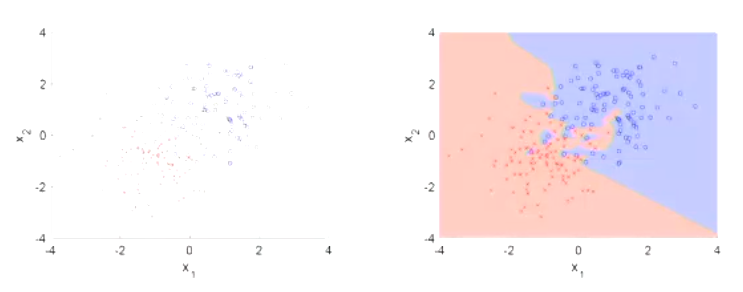

Introduction to Machine Learning through Nearest Neighbors
From Tom Mitchell's Machine Learning, a computer program is utilizing machine learning if it learns from experience E with respect to some class of tasks T and performance measure P if its performance at tasks in T, as measured by P, improves with experience E.
Machine learning shows up everywhere:
- Chess Play (Deep Blue, IBM, 1997)
- Jeopardy (Watson, IBM, 2011)
- Atari games (DQN, Deepmind, 2015)
- Go (AlphaGo, Deepmind, 2016)
- Autonomous Driving (Uber, Audi, NVIDIA...)
Some notation is defined here:
$$x^i → Model → y^i$$ $$D = {(x^i, y^i)}^N_{i=1}$$ \(D\) is the dataset with \(N\) entries, each with an input \(x^i\) and output \(y^i\)
ML algorithms are usually characterized according to:
- Available annotated data (supervised vs unsupervised)
- Supervised problems have inputs and labels. The model's task is to predict the label from new inputs.
- Unsupervised problems do not have labels. The model's task is to find structure in the data.
- Complexity of model (linear vs non-linear)
- Structure of output (independent vs structured)
- Modeling of data (generative vs discriminative)
The Nearest Neighbor algorithm is a good introductory model to begin discussion on how to evaluate the strengths and weaknesses of models. NN assumes that similar things exist in close proximity to each other.

We are given a set of \(N\) points in 2-D space: \(D = {(x^i, y^i)}^N_{i=1}\) where each point is labeled red or blue. If we add a point, it will have the same label as the point closest to it. How do we choose \(y\), the label of the newly added point, \(x\)? $$y = \underset{i \in [1, N]}{\operatorname{argmin}}||x^i - x||^2_2$$ $$ = \underset{i \in [1, N]}{\operatorname{argmin}}d(x^i, x)$$ The distance function \(d(x^i, x)\) in this example is set to the Euclidean distance / L2 Norm function. The distance function chosen should be the one that best describes the data and the nature of its clustering.
There are several good features about this model. A main one is that it can be applied to non-binary classification problems since the label to be predicted only depends on the distance between points. The actual label does not matter in the prediction algorithm. Also, as the number of samples increase, this model converges to the best possible classifier, though the conversion is worse in high data dimensions since distance behaves oddly in higher dimensional space. ¹
A shortcoming of this model is that it is susceptible to noisy data, as can be seen in the figure above, where there are stray bits of blue labels in the predominantly red area. There are also high computational costs. Assume that \(x \in \mathbb{R}^d\), there are \(n\) inputs, and the Euclidean distance function is used. The naive memory used is \(O(nd)\) to store all \(n\) inputs of \(d\) dimension. The naive runtime is \(O(nd)\); \(O(d)\) to compute distances for each \(n\) inputs.